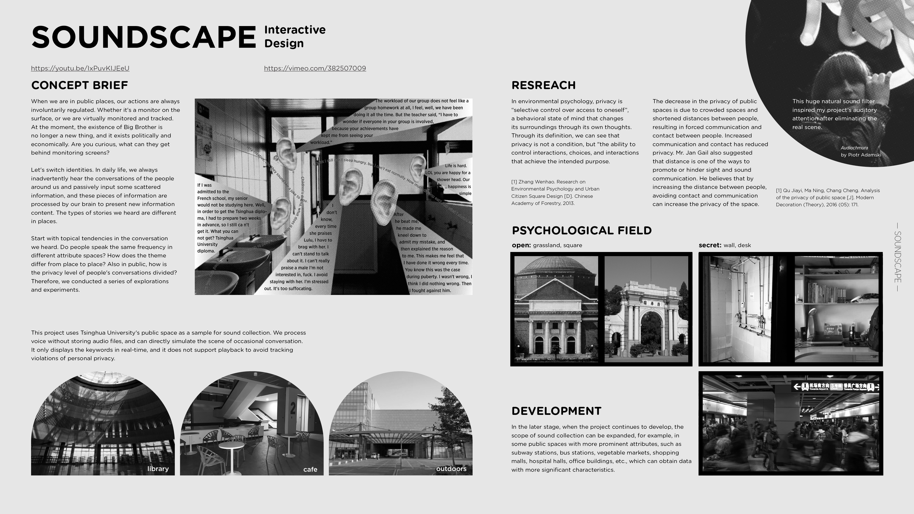
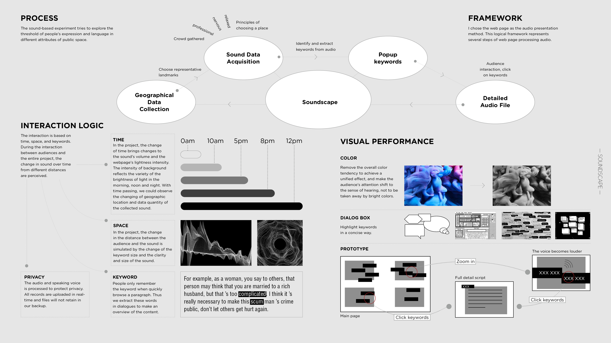
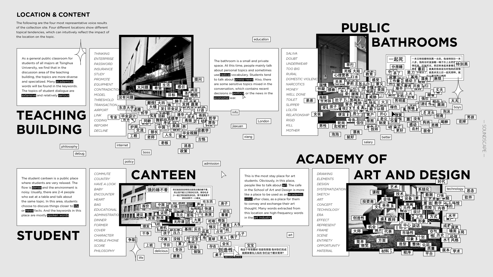
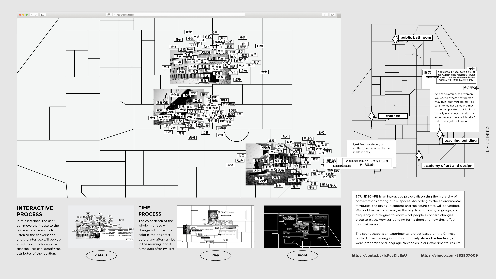

Soundscape
SOUNDSCAPE is an interactive project discussing the hierarchy of conversations among public spaces. According to the environmental attributes, the dialogue content and the sound state will be verified. We could extract and technically analyze the big data of words, language, and frequency of words in dialogues, to figure out: What people's concern changes from place to place? How surrounding forms them and how they affect the environment?
   